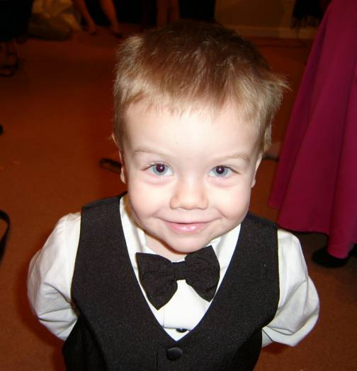

|
 |
Maxwell Andric Xavier Wogsland was born to Bradley and Cara Wogsland during July of 2003 in Atlanta, GA. He is named for James Clerk Maxwell, the Physicist who unified the equations of electricity and magnetism and discovered that light is an electromagnetic wave. The Andric is a Norse variant of the middle name of his uncle Packie, who helped us choose his name by noting Max's initals are also M.A.X. Wogsland. Finally, Xavier is for Charles Xavier, leader of the comic heros the X-Men.
As a young lad Maxwell lived in Alpharetta, GA, Knoxville, TN and Sunnyvale CA. He also loves playing with his sisters, especially his baby sister Zara who believes him to be one of the funniest people on the face of the earth. |